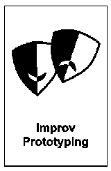

Improv Prototyping
In breve - Improv Prototyping è una Liberating Structure che testa soluzioni a sfide reali attraverso scene brevi improvvisate. Un piccolo gruppo recita uno scenario, gli altri osservano e danno feedback strutturato prima di iterare. Non serve teatro: serve una situazione concreta da provare.
- Durata
- variabile
- Difficoltà
- Intermedia
- Gruppo
- da 10 a 30 persone
- Fase
- Prototipare
Domanda da portare
- "Come gestiresti un cliente particolarmente difficile in questa situazione?"
- "Quale conversazione con il tuo capo vorresti che andasse diversamente?"
- "Come potresti rendere produttiva una riunione che oggi si blocca sempre?"
Cosa ti serve
- Spazio centrale libero (il "palco") e sedie per gruppi di osservatori.
- 3-5 volontari per la prima scena; ruoli assegnati in anticipo.
- Oggetti di scena semplici (telefono, documenti) se servono al realismo.
- Timer visibile per rispettare i 3-5 minuti di scena.
I passaggi
Spiega le regole: scena breve, feedback strutturato, poi iterazione
2 minDescrivi lo scenario e assegna i ruoli agli attori
3 minPrima rappresentazione (max 5 min), senza interruzioni
5 minDebrief nei gruppi di osservatori con [1-2-4-All](/structures/1-2-4-all/)
10 minNuova versione della scena con comportamenti diversi
5 minPlenaria: cosa abbiamo imparato? Cosa proviamo davvero?
5 min